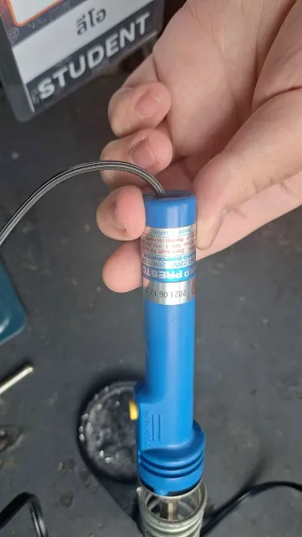

ความคืบหน้าในวันนี้
วันนี้เป็นวันที่ผมได้ tof laser sensor หลังจากที่สั่งไป เมื่อของมาถึงผมจึงนำเซนเซอร์มาบัดกรีและลองมาเทสค่า ปรากฎว่าจากเซนเซอร์ 8 ตัวมีตัวที่ค่าตรงอยู่แค่ตัวเดียวและมีอีก 4 ตัวที่ค่าคงที่แต่อาจจะมากกว่าอยู่ และอีก 3 ตัวที่เหลือไม่สามารถส่งค่าได้ด้วยซ้ำทำให้ผมงงว่าทำไมเซนเซอร์พังเยอะขนาดนี้

กลับหน้าหลัก